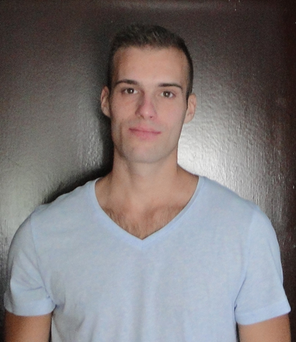

Portfolio Marka Čehoka
Dobar Dan.
Ja sam Marko Čehok i ovo je Moj portfolio u izradi.
U slobodno vrijeme učim i usavršavam znanje o izradi web stranica.
Rado učim nove stvari, a programiranje mi je zanimljivo i privlači me.
Poznajem HTML, CSS, C/C++.
Učim o php i JavaScriptu koliko mi dozvoljava vrijeme.
Kontakt & Životopis.pdf Download
Radno iskustvo
- 9.1.2017. – danas - Tehnobeton, Varaždin
-Specijalista tehničke podrške
- Siječanj 2014. – 8.1.2017. - Inter in d.o.o., Marčan
-Operator za unos podataka
Obrazovanje
- Rujan 2009. – rujan 2016. – Sveučilište Sjever, Varaždin
Smjer: Elektrotehnika
Tečajevi
- Listopad 2016. – Trenutno – Škola stranih jezika
Jezik: Njemački A1
- Prosinac 2014. – rujan 2015. – CISCO akademija
Kategorija: CCNA
Projekt u izradi.
Zagorje-Kamen